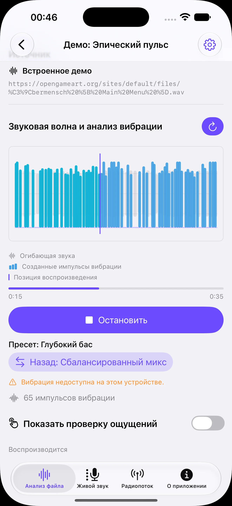
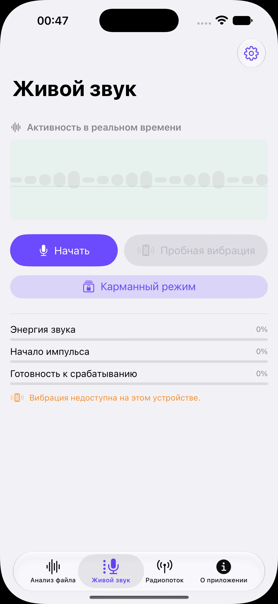
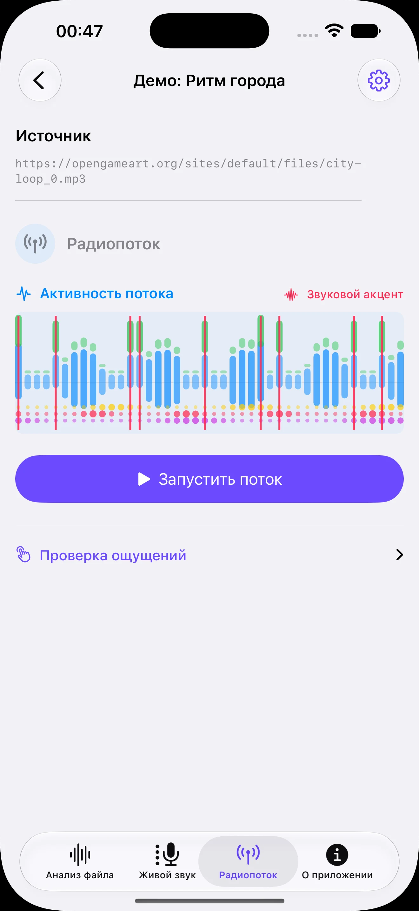
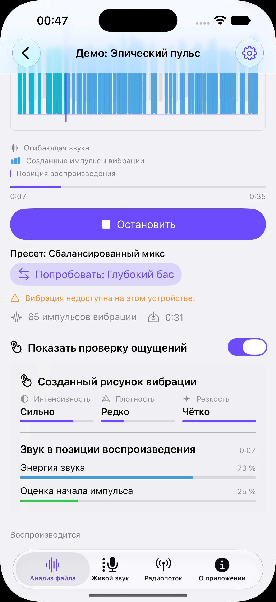

01
Аудио и видео
Импортируйте файл или откройте встроенное демо. Сохраните анализ и воспроизводите импульсы в такт звуку.


Почувствуйте ритм музыки
Почувствуйте ритм и бас через вибрацию на совместимом iPhone. Четыре встроенных демо, анализ аудио и видео и шесть пресетов.

Импортируйте файл или откройте встроенное демо. Сохраните анализ и воспроизводите импульсы в такт звуку.

Следите за уровнем окружающего звука и попробуйте вибрацию на совместимом iPhone до включения микрофона.

Откройте прямую ссылку на совместимое аудио или видео. HLS — только воспроизведение.

Снимки сделаны в приложении на русском. Активность потока показана на демонстрационных данных.
Выберите один из шести пресетов. Настройте интенсивность, чувствительность, плотность и смещение по времени.

Для вибрации нужен совместимый iPhone с Taptic Engine. На iPad можно воспроизводить звук и смотреть анализ, но не стоит ожидать такой же отдачи.
Анализируйте совместимые локальные аудио и видео и воспроизводите сохранённый результат офлайн. Для живого звука нужен доступ к микрофону. Совместимые прямые потоки требуют интернета. Для HLS доступно только воспроизведение. Защищённые потоки музыкальных сервисов не поддерживаются.
TactiBeat не является медицинским устройством и не заменяет слуховые аппараты, кохлеарные имплантаты, медицинскую помощь или консультацию специалиста.
Нет. В приложение включены четыре демо CC0. Откройте любое, запустите анализ и воспроизведите созданную вибрацию на совместимом iPhone.
Анализируйте совместимые локальные аудио и видео и воспроизводите сохранённый результат офлайн. Для живого звука нужен доступ к микрофону. Совместимые прямые потоки требуют интернета. Для HLS доступно только воспроизведение. Защищённые потоки музыкальных сервисов не поддерживаются.
Попробуйте пробную вибрацию на совместимом iPhone. Для живого звука разрешите доступ к микрофону, поднесите телефон ближе к источнику или повысьте чувствительность. iPad может не иметь аналогичного оборудования.
Нет. Живой звук слушает окружение через микрофон, а не захватывает системное аудио. В самом TactiBeat можно открыть файл или совместимую прямую ссылку.
Нет. У сохранённого анализа свои настройки. Для изменения выберите «Создать заново», проверьте настройки и сохраните их, чтобы повторить анализ.
Вибрация телефона не передаёт точно высоту звука, слова или тембр. TactiBeat сосредоточен на тайминге и ритме. Это не медицинское устройство и не замена профессиональной помощи.